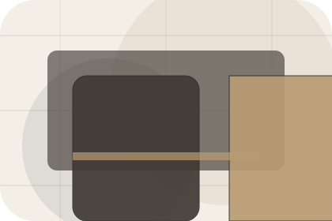
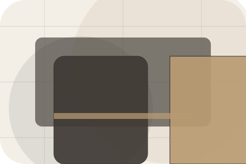
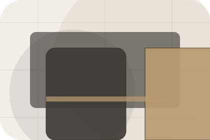
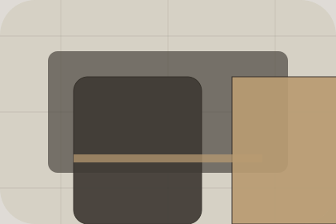

Home / 01
Stay
A hotel site with serene full-bleed rooms, understated booking modules, experience cards, and policy calm
Home opens as a clear hospitality decision hub: what Stay offers, who it helps, why it matters, and which route to take first.
The first screen combines positioning, proof, primary action, and fast internal navigation, so people can act immediately or compare the rest of the home route with context.
Check availabilityPlan the visitReserve with context
Serene full-bleed stay hero
Check Availability
Select the closest route and Stay keeps the next step, proof, and follow-up expectation aligned with comfort and availability.

Site atlas
Every route through Stay
This homepage is the working index for hospitality, hotels & guest accommodation: it explains the offer, points to every deeper page, and keeps the final action visible without making the visitor hunt.
A hotel site with serene full-bleed rooms, understated booking modules, experience cards, and policy calm. The page links problem, promise, services, process, proof, questions, support, legal routes, and conversion paths into one clear decision map.
Hotel
Open the hotel route for story, hospitality, standards so hospitality, hotels & guest accommodation visitors can compare context, proof, and next steps.
Open HotelRooms
Open the rooms route for types, features, views so hospitality, hotels & guest accommodation visitors can compare context, proof, and next steps.
Open RoomsAmenities
Open the amenities route for facilities, dining, spa so hospitality, hotels & guest accommodation visitors can compare context, proof, and next steps.
Open AmenitiesExperiences
Open the experiences route for local, romantic, family so hospitality, hotels & guest accommodation visitors can compare context, proof, and next steps.
Open ExperiencesOffers
Open the offers route for seasonal, longstay, weekend so hospitality, hotels & guest accommodation visitors can compare context, proof, and next steps.
Open OffersBooking
Open the booking route for dates, guests, rooms so hospitality, hotels & guest accommodation visitors can compare context, proof, and next steps.
Open BookingGallery
Open the gallery route for rooms, lobby, food so hospitality, hotels & guest accommodation visitors can compare context, proof, and next steps.
Open GalleryFAQ
Open the faq route for checkin, parking, pets so hospitality, hotels & guest accommodation visitors can compare context, proof, and next steps.
Open FAQContact
Open the contact route for address, phone, email so hospitality, hotels & guest accommodation visitors can compare context, proof, and next steps.
Open ContactAsset System
Review the local assets, icons, OG images, and static handoff materials used by Stay.
Open Asset SystemSitemap
Use the full sitemap to recover any route and verify the whole Stay structure.
Open SitemapPrivacy
Read the privacy route before sending personal details through the static form.
Open PrivacyCookies
Manage consent and understand the privacy-safe analytics approach.
Open CookiesHome / 02
Stay
Stay adds hospitality context to the home route, using the quiet retreat booking flow structure to support comfort and availability before visitors choose a next step.
Stay uses retreat room cards and focused copy to make the decision easier to scan, aligning the section with comfort and availability rather than filling space.
Open Hotel- 01
Context
Stay gives the page a specific angle instead of repeating the navigation label.
- 02
Judgment
The retreat room cards show what to compare, what to avoid, and what matters most for hospitality, hotels & guest accommodation visitors.
- 03
Direction
The final cue points to a useful internal route so the section keeps the journey moving.
Home / 03
Location
Location makes the contact path concrete: what to send, how the response works, and what Stay needs before visitors check availability.
The section reduces contact friction by naming the channel, expected detail, privacy path, and response expectation instead of dropping visitors into a generic form.
Open RoomsStay keeps location practical: send the key details, choose the right contact route, and know what kind of reply to expect.
Check AvailabilityHome / 04
Rooms
Rooms explains the practical scope, best-fit situations, and expected outcome so hospitality visitors can compare options without decoding jargon.
The section keeps the offer concrete: what is included, who it is best for, what decision it supports, and which linked route gives the deeper detail.
Open AmenitiesBest Fit
Who should use rooms and when it belongs in the home journey.
Serene full-bleed stay hero
Check Availability
Select the closest route and Stay keeps the next step, proof, and follow-up expectation aligned with comfort and availability.
Home / 05
Amenities
Amenities adds hospitality context to the home route, using the quiet retreat booking flow structure to support comfort and availability before visitors choose a next step.
Stay uses retreat room cards and focused copy to make the decision easier to scan, aligning the section with comfort and availability rather than filling space.
Open ExperiencesContext
Amenities gives the page a specific angle instead of repeating the navigation label.

Judgment
The retreat room cards show what to compare, what to avoid, and what matters most for hospitality, hotels & guest accommodation visitors.
Direction
The final cue points to a useful internal route so the section keeps the journey moving.
Home / 06
Experiences
Experiences adds hospitality context to the home route, using the quiet retreat booking flow structure to support comfort and availability before visitors choose a next step.
Stay uses retreat room cards and focused copy to make the decision easier to scan, aligning the section with comfort and availability rather than filling space.
Open OffersExperiences gives the page a specific angle instead of repeating the navigation label.
The retreat room cards show what to compare, what to avoid, and what matters most for hospitality, hotels & guest accommodation visitors.
The final cue points to a useful internal route so the section keeps the journey moving.
Home / 07
Offers
Offers defines the better state Stay is built to create, with enough detail to make the promise believable.
A hotel site with serene full-bleed rooms, understated booking modules, experience cards, and policy calm. The section grounds that direction in concrete benefits, visible tradeoffs, and a next route visitors can use when the promise feels relevant.
Open BookingBetter State
Offers defines what becomes clearer, easier, or safer when Stay is the chosen route.
Practical Gain
The benefit is tied to comfort and availability, not a vague quality claim.
Proof Route
Visitors get a linked path to compare the promise against services, standards, or examples.
Home / 08
Reviews
Reviews converts customer proof into a useful buying signal: the problem, the experience, and what changed afterward.
Proof stays believable by focusing on situation, service experience, and practical change rather than vague praise or unsupported results.
Open GallerySituation
What the visitor needed before choosing Stay, written with enough context to feel real.
Experience
How the service, product, or support felt during the process, not just that it was good.
Change
What became easier to decide, complete, buy, book, or trust after the interaction.
Home / 09
Questions
Questions handles buying doubts directly so visitors can understand timing, fit, limits, and the safest next step.
Answers are short by design: enough to remove hesitation, not so much that the page turns into documentation before the visitor can act.
Open ContactQuestion
Questions gives the page a specific angle instead of repeating the navigation label.

Answer
The retreat room cards show what to compare, what to avoid, and what matters most for hospitality, hotels & guest accommodation visitors.

Next Step
The final cue points to a useful internal route so the section keeps the journey moving.
What happens first?
Stay starts with a focused intake so the recommendation matches the visitor's context, risk, timing, and readiness.
How is scope kept clear?
Each route explains inclusions, exclusions, documents, timing, and the decision points that affect final delivery.
How is this site different?
The theme uses quiet retreat booking flow, retreat room cards, and room filter, booking panel, offer selector, amenities tabs rather than a shared template rhythm.
Serene full-bleed stay hero
Check Availability
Select the closest route and Stay keeps the next step, proof, and follow-up expectation aligned with comfort and availability.
Home / 10
Check Availability
Stay closes the home route with a clear action, a quick reminder of the value, and a low-friction way to check availability.
Visitors who are ready can use the primary action. Visitors who are still comparing can scan the section links, proof, and support routes before they check availability.
Check AvailabilityThe final block keeps the choice simple: act now, compare one more proof route, or send enough detail for a focused response.
Check Availabilitycomfort and availability
Check Availability
A hotel site with serene full-bleed rooms, understated booking modules, experience cards, and policy calm. Home ends with a direct path to check availability, plus enough context for visitors who still need to compare.

Check Availability